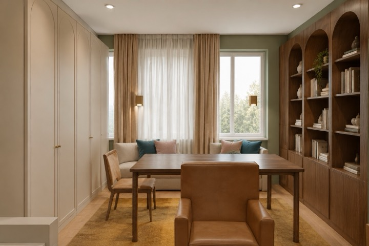

На реальных проектах
Где это посмотреть в альбомах
Альбомы открыты целиком: каждый лист увеличивается, к любому можно оставить правку голосом.
Где на самом деле нужны розетки, почему их привязывают к мебели, а не к рулетке, и какие требования действуют в санузле. С пунктами нормативов и без выдумок.

Розетку в санузле можно ставить только в зоне 3 — не ближе 1200 мм от ванны.
из этой статьиРазметка «через каждые два метра по периметру» даёт ровно то, что потом закрывают шкафом. Точки нужно считать от фактических габаритов расстановки: ТВ-зона по центру ниши, фронт кухни по технике, стол по рабочему месту, спальня — по сторонам кровати на высоте изголовья.
Практические правила, которые мы держим в проектах: не ближе 150 мм от угла и от дверного проёма, не за корпусом шкафа, блок розеток — по центру, привязка в формате L/H (от угла и от пола) до центра блока.
В ванной действует деление на зоны по ПУЭ, гл. 7.1. Ключевое, что нужно знать заказчику: розетку можно ставить только в зоне 3 — не ближе 1200 мм от края ванны или душа. Если зоны 3 в помещении физически нет (маленький санузел), розетка не ставится вообще: вместо неё делают вывод кабеля под конкретный прибор через дифференциальную защиту.
Механизмы во влажных помещениях — с защитой не ниже IP44, линии — через УЗО с током утечки 30 мА. Стиральная машина, тёплый пол и подсветка зеркала — отдельными линиями.
Один плафон в центре комнаты даёт плоский свет и тени. Рабочая схема — три слоя: общий (споты или трек), рабочий (над столом, над рабочей зоной кухни, у изголовья) и декоративный (LED в коробе, подсветка ниш).
Что проверить на плане освещения: споты не попадают над шкафами и кроватями, расстояние от короба не меньше 150 мм, в мокрых зонах — IP44, у каждой группы есть свой выключатель, и это видно на схеме включения. Цветовая температура для жилых зон — 2700–3000 K.
Планы отвечают на вопрос «где сверлить», но не отвечают «что купить». Для этого нужен лист щита: однолинейная схема с вводным автоматом, счётчиком, УЗО и отводами по группам, и кабельный журнал — какая группа, какой автомат, какой кабель и сколько метров. Длины считаются по трассе с запасом на спуски.
Живые листы квартиры 56 м²: розетки и электровыводы, план освещения и однолинейная схема щита.
Электрику размечают до штробления и после того, как принята расстановка мебели. Обратный порядок — самая частая и самая дорогая переделка: стены уже прошиты, а розетка у кровати оказалась под тумбой. Поэтому в альбоме планы розеток идут после планировочного решения и ссылаются на него.
Альбомы открыты целиком: каждый лист увеличивается, к любому можно оставить правку голосом.
Общее правило комфорта: 300 мм от пола в жилых зонах, 1100–1200 мм над рабочей поверхностью кухни, 700–900 мм у рабочего стола. Норма высоту не диктует — важнее привязка к мебели и приборам.
Только если это зона 3 — не ближе 1200 мм от края ванны или душа, с IP44 и УЗО 30 мА. Ближе — запрещённые зоны 1 и 2, там допускается лишь вывод кабеля к прибору через дифзащиту.
Обычно одна группа освещения на 8–10 светильников, отдельные группы розеток по помещениям и выделенные линии на варочную панель, посудомоечную и стиральную машины, тёплый пол.
План, картинки, которые нравятся, и пара слов о том, как вы живёте. Сумма считается сразу по площади из брифа: 2 000 ₽/м² × площадь, не меньше 80 000 ₽. Подтверждаем её в заказе до оплаты; проект начинается после оплаты.
Автор проекта — дизайнер-архитектор Кырлан Александр. Фамилия автора стоит в основной надписи каждого листа, телефон — на странице контактов.